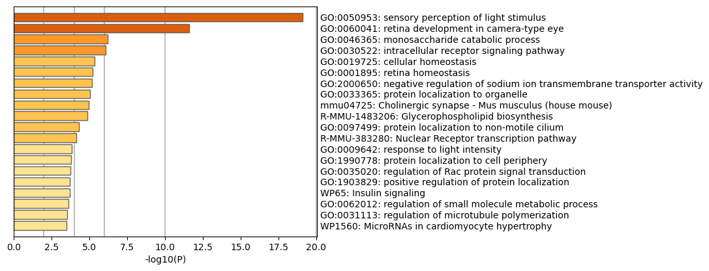
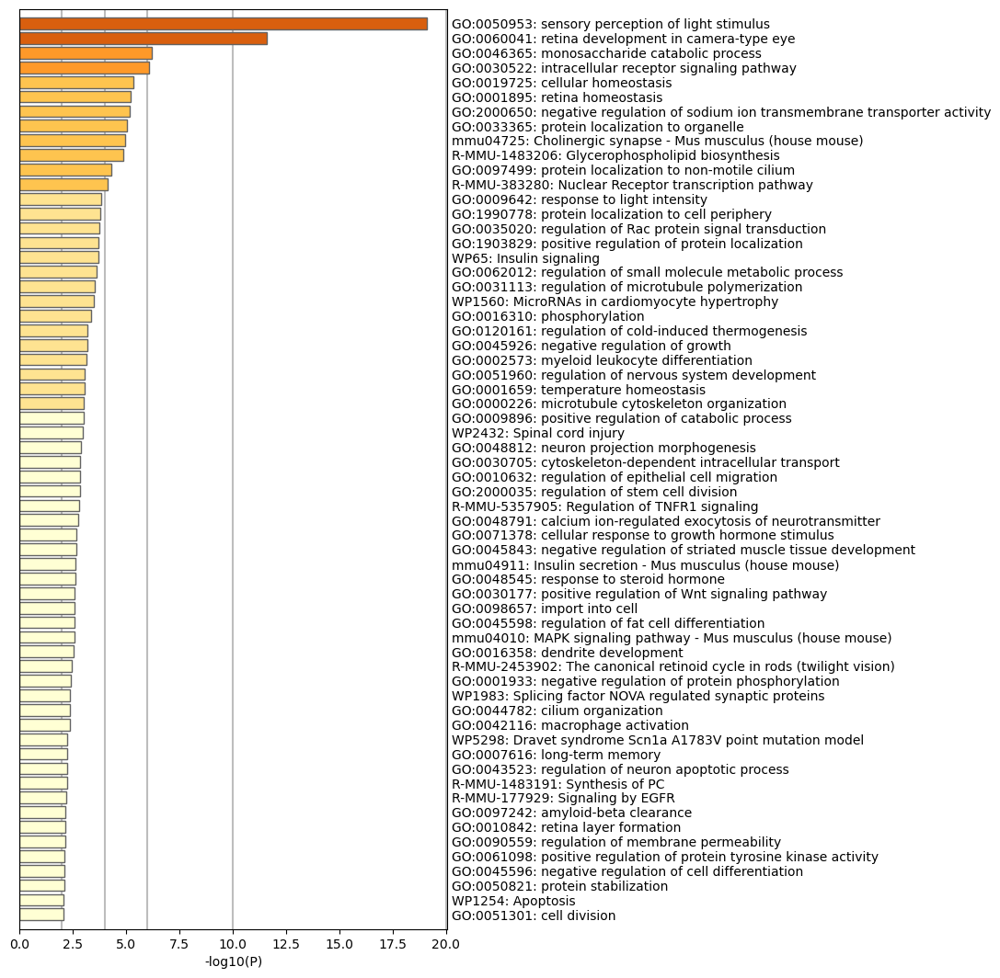
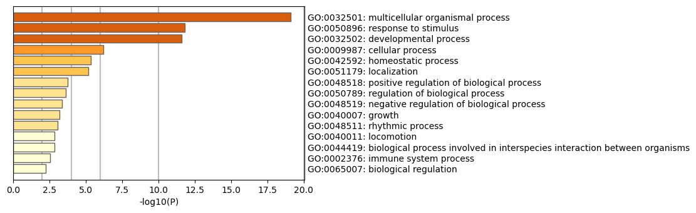

Metascape Gene List Analysis Report
metascape.org1Bar Graph Summary
Figure 1. Bar graph of enriched terms across input gene lists, colored by p-values.
|
 |
| Metascape only visualizes the top 20 clusters. Up to 100 enriched clusters can be viewed here.  |
| The top-level Gene Ontology biological processes can be viewed here.  |
{kind=link}
{kind=link}
Gene Lists
User-provided gene identifiers are first converted into their corresponding M. musculus Entrez gene IDs using the latest version of the database (last updated on 2025-01-01). If multiple identifiers correspond to the same Entrez gene ID, they will be considered as a single Entrez gene ID in downstream analyses. The gene lists are summarized in Table 1.Table 1. Statistics of input gene lists.
| Name | Total | Unique |
|---|---|---|
| hits | 337 | 336 |
Gene Annotation
The following are the list of annotations retrieved from the latest version of the database (last updated on 2025-01-01) (Table 2).Table 2. Gene annotations extracted
| Name | Type | Description |
|---|---|---|
| Gene Symbol | Description | Primary HUGO gene symbol. |
| Synonyms | Description | Aliases. |
| Type of Gene | Description | "protein-coding", "tRNA", "ncRNA", etc. As Entrez assigns gene id to non-coding molecules, the main use of this annotation is for filtering purpose. E.g., if our gene list contains miRNA and ncRNA, we will want to filter out non-protein-coding genes, otherwise, p-values in enrichment analysis may be affected. |
| Description | Description | Short description. |
| Gene Summary | Description | A paragraph summarizing gene function. |
| Gene Location | Description | Gene Location |
| Biological Process (GO) | Function/Location | Descriptions summarized based on gene ontology database, where up to three most informative GO terms are kept. |
| Cellular Component (GO) | Function/Location | Descriptions summarized based on gene ontology database, where up to three most informative GO terms are kept. |
| GOSlim (Ontology) | Function/Location | GOSlim (Ontology) |
| Molecular Function (GO) | Function/Location | Descriptions summarized based on gene ontology database, where up to three most informative GO terms are kept. |
| Kinase Class (UniProt) | Function/Location | Detailed kinase classes. |
| Protein Function (Protein Atlas) | Function/Location | Protein Function (Protein Atlas) |
| InterPro | Function/Location | InterPro |
| Ensembl Protein Family | Function/Location | Ensembl Protein Family |
| Subcellular Location (Protein Atlas) | Function/Location | Subcellular Location (Protein Atlas) |
| Secreted (UniProt) | Function/Location | Whether the protein is secreted. |
| Secreted (Protein Altas) | Function/Location | Predicted Secreted Proteins (Protein Altas) |
| Transmembrane (UniProt) | Function/Location | The number of predicted membrane passes the protein has. |
| Membrane (Protein Altas) | Function/Location | Predicted Membrane Proteins (Protein Altas) |
| Plasma (Protein Altas) | Function/Location | Plasma Proteins (Protein Altas) |
| Transmembrane (TMHMM) | Function/Location | Transmembrane (TMHMM) |
| Appris (Ensembl) | Function/Location | |
| JAX | Genotype/Phenotype/Disease | JAX mouse phenotype associated with the gene. |
| GOSlim (Phenotype) | Genotype/Phenotype/Disease | GOSlim (Phenotype) |
| Orphanet | Genotype/Phenotype/Disease | Orphanet |
| OMIM | Genotype/Phenotype/Disease | Human Madeline disease association. |
| Pathogenic LoF (ClinVar) | Genotype/Phenotype/Disease | Pathogenic clinical indication due to loss-of-function genetic variations provided by NCBI ClinVar database. |
| dbGap (NCBI) | Genotype/Phenotype/Disease | The database of Genotypes and Phenotypes-dbGap(NCBI) |
| GWAS (NHGRI-EBI) | Genotype/Phenotype/Disease | Genome-wide association study (NHGRI) |
| Developmental Disorders (DDG2P) | Genotype/Phenotype/Disease | Developmental Disorders (DDG2P) |
| Variations (Ensembl) | Genotype/Phenotype/Disease | Variations (Ensembl) |
| Human Phenotype Ontology (HPO) | Genotype/Phenotype/Disease | The Human Phenotype Ontology (HPO) |
| Drug (DrugBank) | Genotype/Phenotype/Disease | Drug information for the given gene as target. |
| Disease and gene associations (DisGeNET) | Genotype/Phenotype/Disease | Large collections of genes and variants associated to human disease |
| Disease Ontology (DO) | Genotype/Phenotype/Disease | Disease Ontology (DO) |
| Disease and gene associations (GeDiPNet) | Genotype/Phenotype/Disease | Curated gene-disease associations based on DisGeNET, ClinGen, ClinVar, HPO, OrphaNet, and PsyGeNET |
| Protein Functions (ChatGPT) | Description | Uncurated gene functions described by ChatGPT. |
| Disease & Drugs (ChatGPT) | Genotype/Phenotype/Disease | Uncurated disease and drug associations described by ChatGPT. |
| Gene RIF (NCBI) | Others | Gene References into Function |
| Pubmed Count | Others | Number of PubMed articles associated with the gene, can approximate a gene's novelty. (Will need to use GIF articles instead in the future) |
| Isoforms ID Map | Others | Isoforms ID Map |
| Tissue Specificity (TiGER) | Tissue Expression | Specific tissues the gene is expressed in, according to TiGER (However, we think the annotation has limited quality, Gene 8322 (ZFD4) has rather specific expression pattern (http://plugins.biogps.org/data_chart/data_chart.cgi?id=8322) but is not annotated. Same with TLR7 (51284). Therefore in-house annotation will need to be produced in the future.) (This probably will be replaced by ProteinAtlas in the future) |
| RNA Tissue Category (Protein Atlas) | Tissue Expression | RNA Tissue Category (Protein Atlas) |
| Protein Expression Normal (Protein Atlas) | Tissue Expression | Protein Expression Normal (Protein Atlas) |
| Protein Expression Cancer (Protein Atlas) | Tissue Expression | Protein Expression Cancer (Protein Atlas) |
| Canonical Pathways | Ontology | Canonical Pathways |
| KEGG Pathway | Ontology | KEGG Pathway |
| KEGG Functional Set | Ontology | KEGG Functional Set |
| KEGG Structural Complex | Ontology | KEGG Structural Complex |
| Hallmark Gene Sets | Ontology | Hallmark Gene Sets |
| BioCarta Gene Sets | Ontology | BioCarta Gene Sets |
Pathway and Process Enrichment Analysis
For each given gene list, pathway and process enrichment analysis have been carried out with the following ontology sources: GO Biological Processes, KEGG Pathway, Reactome Gene Sets, WikiPathways, and PANTHER Pathway. All genes in the genome have been used as the enrichment background. Terms with a p-value < 0.01, a minimum count of 3, and an enrichment factor > 1.5 (the enrichment factor is the ratio between the observed counts and the counts expected by chance) are collected and grouped into clusters based on their membership similarities. More specifically, p-values are calculated based on the cumulative hypergeometric distribution2, and q-values are calculated using the Benjamini-Hochberg procedure to account for multiple testings3. Kappa scores4 are used as the similarity metric when performing hierarchical clustering on the enriched terms, and sub-trees with a similarity of > 0.3 are considered a cluster. The most statistically significant term within a cluster is chosen to represent the cluster.Table 3. Top 20 clusters with their representative enriched terms (one per cluster). "Count" is the number of genes in the user-provided lists with membership in the given ontology term. "%" is the percentage of all of the user-provided genes that are found in the given ontology term (only input genes with at least one ontology term annotation are included in the calculation). "Log10(P)" is the p-value in log base 10. "Log10(q)" is the multi-test adjusted p-value in log base 10.
| GO | Category | Description | Count | % | Log10(P) | Log10(q) |
|---|---|---|---|---|---|---|
| GO:0050953 | GO Biological Processes | sensory perception of light stimulus | 27 | 8.18 | -19.09 | -14.85 |
| GO:0060041 | GO Biological Processes | retina development in camera-type eye | 22 | 6.67 | -11.58 | -7.94 |
| GO:0046365 | GO Biological Processes | monosaccharide catabolic process | 8 | 2.42 | -6.23 | -3.40 |
| GO:0030522 | GO Biological Processes | intracellular receptor signaling pathway | 14 | 4.24 | -6.08 | -3.27 |
| GO:0019725 | GO Biological Processes | cellular homeostasis | 29 | 8.79 | -5.34 | -2.65 |
| GO:0001895 | GO Biological Processes | retina homeostasis | 8 | 2.42 | -5.23 | -2.61 |
| GO:2000650 | GO Biological Processes | negative regulation of sodium ion transmembrane transporter activity | 4 | 1.21 | -5.16 | -2.59 |
| GO:0033365 | GO Biological Processes | protein localization to organelle | 30 | 9.09 | -5.05 | -2.50 |
| mmu04725 | KEGG Pathway | Cholinergic synapse - Mus musculus (house mouse) | 10 | 3.03 | -4.95 | -2.43 |
| R-MMU-1483206 | Reactome Gene Sets | Glycerophospholipid biosynthesis | 10 | 3.03 | -4.89 | -2.39 |
| GO:0097499 | GO Biological Processes | protein localization to non-motile cilium | 4 | 1.21 | -4.29 | -1.88 |
| R-MMU-383280 | Reactome Gene Sets | Nuclear Receptor transcription pathway | 6 | 1.82 | -4.12 | -1.74 |
| GO:0009642 | GO Biological Processes | response to light intensity | 4 | 1.21 | -3.83 | -1.51 |
| GO:1990778 | GO Biological Processes | protein localization to cell periphery | 14 | 4.24 | -3.81 | -1.49 |
| GO:0035020 | GO Biological Processes | regulation of Rac protein signal transduction | 5 | 1.52 | -3.77 | -1.46 |
| GO:1903829 | GO Biological Processes | positive regulation of protein localization | 21 | 6.36 | -3.72 | -1.45 |
| WP65 | WikiPathways | Insulin signaling | 10 | 3.03 | -3.69 | -1.42 |
| GO:0062012 | GO Biological Processes | regulation of small molecule metabolic process | 17 | 5.15 | -3.63 | -1.37 |
| GO:0031113 | GO Biological Processes | regulation of microtubule polymerization | 6 | 1.82 | -3.55 | -1.31 |
| WP1560 | WikiPathways | MicroRNAs in cardiomyocyte hypertrophy | 7 | 2.12 | -3.50 | -1.27 |
Figure 2. Network of enriched terms: (a) colored by cluster ID, where nodes that share the same cluster ID are typically close to each other; (b) colored by p-value, where terms containing more genes tend to have a more significant p-value.
Protein-protein Interaction Enrichment Analysis
For each given gene list, protein-protein interaction enrichment analysis has been carried out with the following databases: STRING6, BioGrid7, OmniPath8, InWeb_IM9.Only physical interactions in STRING (physical score > 0.132) and BioGrid are used (details). The resultant network contains the subset of proteins that form physical interactions with at least one other member in the list. If the network contains between 3 and 500 proteins, the Molecular Complex Detection (MCODE) algorithm10 has been applied to identify densely connected network components. The MCODE networks identified for individual gene lists have been gathered and are shown in Figure 3. Pathway and process enrichment analysis has been applied to each MCODE component independently, and the three best-scoring terms by p-value have been retained as the functional description of the corresponding components, shown in the tables underneath corresponding network plots within Figure 3.Figure 3. Protein-protein interaction network and MCODE components identified in the gene lists.
Quality Control and Association Analysis
Gene list enrichments are identified in the following ontology categories: PaGenBase, TRRUST. All genes in the genome have been used as the enrichment background. Terms with a p-value < 0.01, a minimum count of 3, and an enrichment factor > 1.5 (the enrichment factor is the ratio between the observed counts and the counts expected by chance) are collected and grouped into clusters based on their membership similarities. The top few enriched clusters (one term per cluster) are shown in the Figure 4-5. The algorithm used here is the same as that is used for pathway and process enrichment analysis.
Figure 4. Summary of enrichment analysis in PaGenBase11.
Figure 5. Summary of enrichment analysis in TRRUST.
Reference
- Zhou et al., Metascape provides a biologist-oriented resource for the analysis of systems-level datasets. Nature Communications (2019) 10(1):1523.
- Zar, J.H. Biostatistical Analysis 1999 4th edn., NJ Prentice Hall, pp. 523
- Hochberg Y., Benjamini Y. More powerful procedures for multiple significance testing. Statistics in Medicine (1990) 9:811-818.
- Cohen, J. A coefficient of agreement for nominal scales. Educ. Psychol. Meas. (1960) 20:27-46.
- Shannon P. et al., Cytoscape: a software environment for integrated models of biomolecular interaction networks. Genome Res (2003) 11:2498-2504.
- Szklarczyk D. et al. STRING v11: protein-protein association networks with increased coverage, supporting functional discovery in genome-wide experimental datasets. Nucleic Acids Res. (2019) 47:D607-613.
- Stark C. et al. BioGRID: a general repository for interaction datasets. Nucleic Acids Res. (2006) 34:D535-539.
- Turei D. et al. A scored human protein-protein interaction network to catalyze genomic interpretation. Nat. Methods. (2016) 13:966-967.
- Li T. et al. A scored human protein-protein interaction network to catalyze genomic interpretation. Nat. Methods. (2017) 14:61-64.
- Bader, G.D. et al. An automated method for finding molecular complexes in large protein interaction networks. BMC bioinformatics (2003) 4:2.
- Pan JB, et al. PaGenBase: a pattern gene database for the global and dynamic understanding of gene function. PLoS One 8, e80747 (2013).